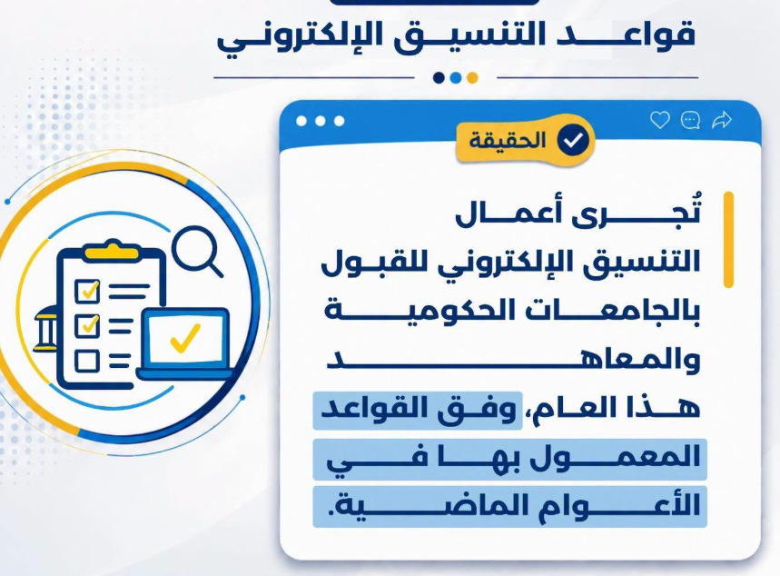
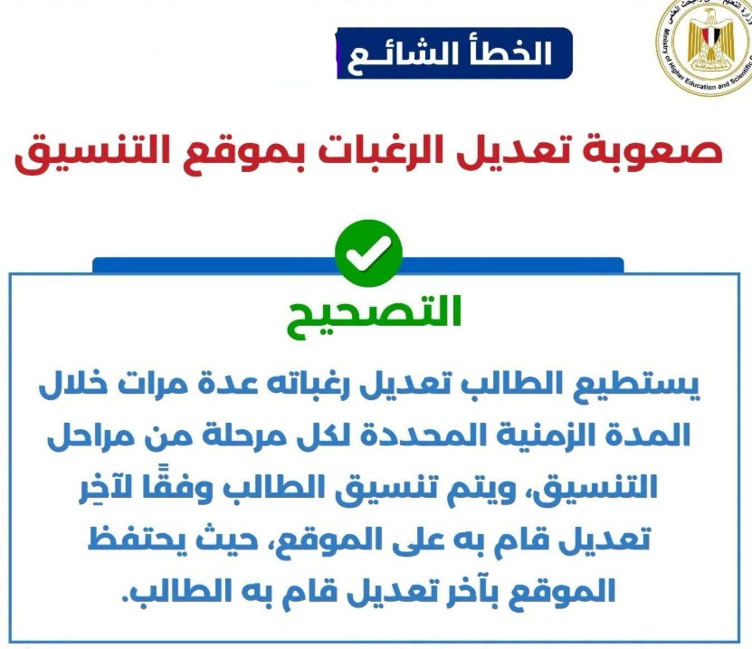
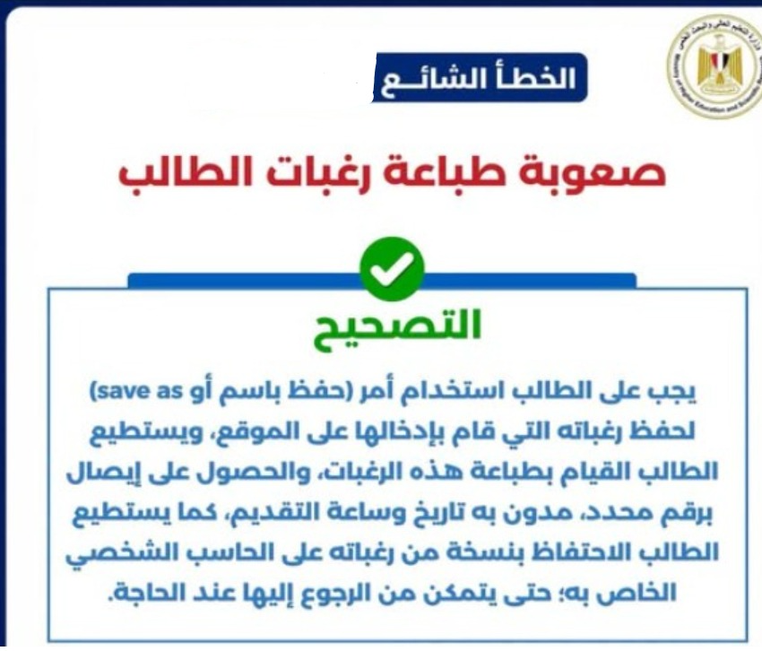
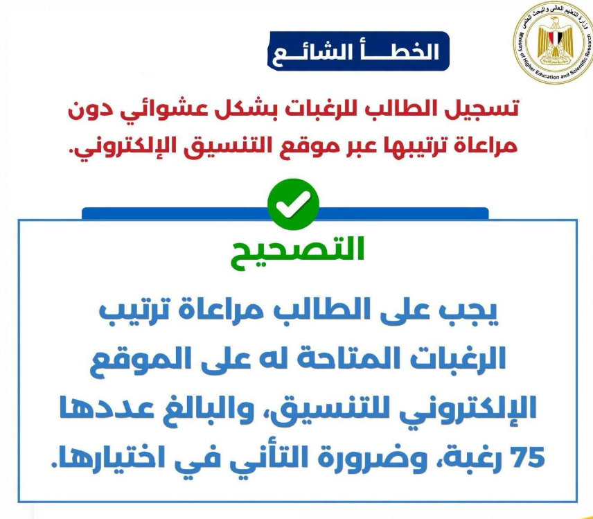
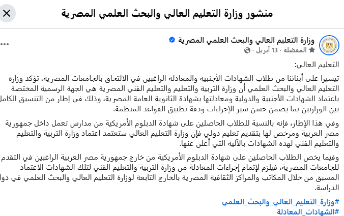
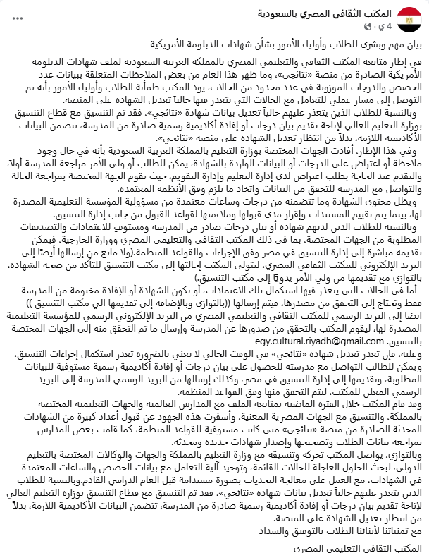

المقر الرئيسي
القاهرة / الجيزة
داخل المدينة الجامعية والحرم الجامعي لجامعة القاهرة.
فتح الموقع على خرائط جوجلشرح عملي للتسجيل الإلكتروني، تجهيز الملفات، تسليم الأوراق، وأماكن التقديم، ومتطلبات طلاب السعودية، والقرارات الرسمية، والدخول من خارج مصر، وبيان تنسيق العام السابق. مصمم ليُستخدم من الموبايل أثناء التحضير، أو يُطبع قبل الذهاب لمكتب التنسيق.
هذه المرحلة تتم بالكامل من موقع التنسيق. لا تدخل في أول يومين إن أمكن؛ الموقع يكون ثقيلًا ويزيد احتمال خطأ إدخال البيانات.
tansik.egypt.gov.eg/application
طالب الشهادات الأجنبية المعادلة مستثنى من المربع السكني، لذلك يمكن كتابة العنوان بما يناسب رغبات الجامعات.
اكتب رقمين موبايل مصريين يعملان ويستقبلان الرسائل. سيصل عليهما اسم المستخدم وكلمة المرور.
بعد المراجعة وتأكيد الطلب ستظهر كل البيانات التي أدخلتها. راجعها بدقة؛ التعديل بعدها ليس أمرًا بسيطًا.
ستظهر صفحة الدفع. بعد الدفع اطبع إيصال الدفع واحتفظ به.
ارجع لموقع التنسيق وسجّل الدخول باسم المستخدم وكلمة المرور.
اطبع كل صفحة بعد مراجعتها.
الـ GPA هو المجموع التراكمي للمواد الدراسية، ويمثل 40% من المجموع الكلي عند التقديم للجامعات في مصر. يُحسب من 8 مواد.
5 مواد أساسية:
3 مواد إضافية حسب نظام المدرسة، مثل:
إذا كان المكتوب فقط Algebra أو Geometry فقد لا تُحتسب كمادة Math المطلوبة لقطاع الهندسة.
قبل اختيار المواد أو اعتمادها، تأكد من توافق أسمائها مع متطلبات الكلية التي تخطط للتقديم لها.
تسجيل الرغبات: اختر نوع الشهادة، ثم اكتب اسم المستخدم وكلمة المرور، وتأكد من البيانات الشخصية.
تختار تخصصًا واحدًا عبر الجامعات: طب القاهرة، طب عين شمس، طب الإسكندرية. هذه الطريقة أوضح وأسهل.
تختار كليات الجامعة الواحدة معًا: طب القاهرة، أسنان القاهرة، صيدلة القاهرة.
متاح لكم 75 رغبة ويجب ملؤها بالكامل، مع الالتزام بترتيب المنطقة الجغرافية حسب العنوان المسجّل في بداية التسجيل.
بعد الانتهاء اطبع الرغبات. يمكن تعديل الرغبات في أي وقت، حتى بعد تسليم الأوراق لمكتب التنسيق.
بعد إنهاء الموقع، حضّر ملفين ثم اذهب للمكتب. علّم على كل ورقة وأنت تجهّز؛ التقدم يُحفظ على نفس الجهاز.
لا يوجد تصوير داخل المكتب. التصوير بالخارج أغلى والزحام أكبر. خذ نسختين من:
سلّم وصل الدفع، واستلم ظرفًا كرتونيًا كبيرًا بداخله استمارة. تأكد أن الملف خاص بشهادات المعادلة الأجنبية وليس العربية.
وصل الاستلام إثبات أن الملف سُلّم، وهو مطلوب أيضًا إذا رغبتم في سحب الملف لاحقًا. بعد ظهور نتيجة الترشيح اطبعوا خطاب الترشيح وتوجهوا إلى الجامعة.
هذه التفاصيل تختصر الزحام وتقلل احتمال رفض الملف أو الرجوع مرة أخرى.
إذا نقص مستند أو وُجدت ورقة غير موثقة، قد يُرفض الملف بالكامل ويُكتب تعهد لاستكمال الناقص لاحقًا حسب قرار الموظف المختص.
صوّروا جميع الأصول قبل الذهاب، واحتفظوا بنسخة من كل المستندات في المنزل.
اكتبوا كل البيانات المطلوبة قبل الوصول إلى الموظف، والتزموا بالهدوء وحسن التعامل؛ ذلك يسرّع إنهاء الإجراءات.
اختار أقرب مقر، وراجع الأوراق قبل التوجه.
داخل المدينة الجامعية والحرم الجامعي لجامعة القاهرة.
فتح الموقع على خرائط جوجلالمدينة الجامعية للطالبات – عزبة سعد – سموحة.
فتح الموقع على خرائط جوجلمبنى إدارة جامعة أسيوط القديم.
فتح الموقع على خرائط جوجلتوضيح بخصوص متطلبات التنسيق: نتائجي – بيان الدرجات – الإفادة الأكاديمية.
يتطلب التنسيق رصد ثماني (8) مواد بالدرجات، مع كتابة ساعة معتمدة واحدة (Credit) بجانب كل مادة.
إذا كانت الدرجة الموزونة على موقع «نتائجي» أربعة حصص (4) فأكثر، فالأمر منتهٍ عند هذا الحد، ولا داعي لأي إجراء إضافي.
أما إذا كانت الدرجة الموزونة على «نتائجي» أقل من ذلك، وبصرف النظر عن عدد الحصص الدراسية، فلا بد من إرفاق أحد المستندين التاليين مع «نتائجي»:
بخصوص بيان الدرجات (الشبيه بالترانسكريبت القديم)، فإن أهم عنصر فيه هو ظهور درجات الصفين الحادي عشر والثاني عشر (11 و12) موضَّحًا بجانبها الساعات المعتمدة.
تم نشر نموذج استرشادي مبني على متطلبات مكتب الملحق الثقافي. ومع ذلك، يمكن للمدرسة اعتماد أي صيغة تراها مناسبة؛ فالمطلوب فقط ورقة موضَّح بها أسماء مواد الصفين مع وزن كل مادة بالساعات المعتمدة، ثم إرسالها بالبريد الإلكتروني الخاص بالمدرسة إلى مكتب الملحق الثقافي:
«نتائجي» هو المستند الوحيد المطابق فعليًا للدرجات، والوحيد الذي يمكن التحقق من صحته إلكترونيًا دون الحاجة إلى أي أختام. ولهذا السبب، فإن بيان مكتب الملحق الثقافي موجَّه لمن لا يستطيعون تعديل «نتائجي» أو استخراج مستندات إضافية منه؛ أي أن «نتائجي» يظل هو الأصل والمرجع النهائي للدرجات.
الإفادة الأكاديمية حق أصيل لكل طالب يدرس الدبلومة الأمريكية، للتعرّف على الساعات المعتمدة والحصول عليها، لا سيما أن هذه المعلومة غير متوفرة من أي مصدر آخر. لذا يجب على المدرسة إصدارها، وفي حال امتناعها عن ذلك، يحق لولي الأمر تقديم شكوى نظامية إلى إدارة التعليم ووزارة التعليم التابعة لها المدرسة. وقد سبق نشر نص الشكوى الجاهز لمن يحتاج إليه.
أصدرت وزارة التعليم العالي سلسلة جديدة بعنوان «اعرف الحقيقة وكيفية التعامل مع الأخطاء الشائعة 01».

تُجرى أعمال التنسيق الإلكتروني للقبول بالجامعات الحكومية والمعاهد هذا العام، وفق القواعد المعمول بها في الأعوام الماضية.

يستطيع الطالب تعديل رغباته عدة مرات خلال المدة المحددة لكل مرحلة، ويتم التنسيق وفقًا لآخر تعديل على الموقع.

استخدم أمر حفظ باسم (Save As) لحفظ الرغبات، ثم اطبعها واحتفظ بنسخة على جهازك مع إيصال الرقم والتاريخ والوقت.

يجب مراعاة ترتيب الـ 75 رغبة المتاحة على الموقع، والتأني في اختيارها وعدم تسجيلها بشكل عشوائي.

جهة الاعتماد والمعادلة هي وزارة التربية والتعليم والتعليم الفني. شهادات المدارس الدولية المرخصة داخل مصر تُقبل بعد اعتماد الوزارة، وطلاب الخارج يتممون المعادلة عبر وزارة التربية والتعليم بعد اعتماد الشهادات من المكاتب الثقافية المصرية في بلد الدراسة.
بيان مهم وبشرى للطلاب وأولياء الأمور بشأن شهادات الدبلومة الأمريكية الصادرة من منصة «نتائجي».
البريد الرسمي للمكتب الثقافي والتعليمي المصري: egy.cultural.riyadh@gmail.com

موقع التنسيق قد لا يفتح من خارج مصر. هذه 5 طرق يستخدمها الطلاب للدخول إلى الموقع الرسمي فقط.
إضافة لمتصفح كروم، وهي الأنسب للكمبيوتر من بين الطرق الثلاث.
تدخل من خلاله على جهاز كمبيوتر مفتوح في مصر، ثم تفتح موقع التنسيق من ذلك الجهاز. يحتاج موافقة صاحب الجهاز في مصر وأن يكون الجهاز شغالًا ومتصلًا بالإنترنت.
نفس فكرة TeamViewer: الدخول عن بُعد إلى جهاز كمبيوتر مفتوح في مصر لفتح موقع التنسيق منه. يحتاج موافقة صاحب الجهاز في مصر وأن يكون الجهاز شغالًا ومتصلًا بالإنترنت.
يمكن الاطلاع على بيان الحد الأدنى للقبول بالكليات والمعاهد لشهادة الدبلومة الأمريكية AD لعام 2025 من الرابط الرسمي أدناه. هذا البيان مرجع للعام السابق، وليس ضمانًا لحدود القبول هذا العام.
بيان رسمي من موقع التنسيق بحدود القبول بالكليات والمعاهد لشهادة الدبلومة الأمريكية.